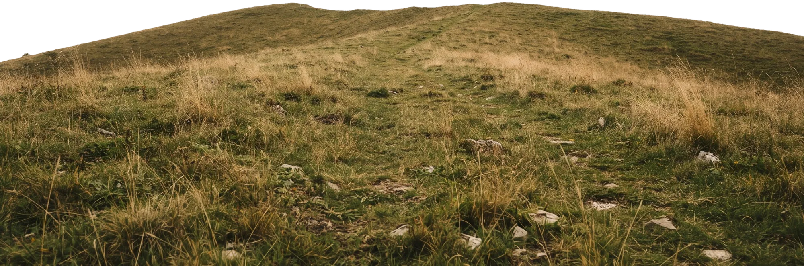
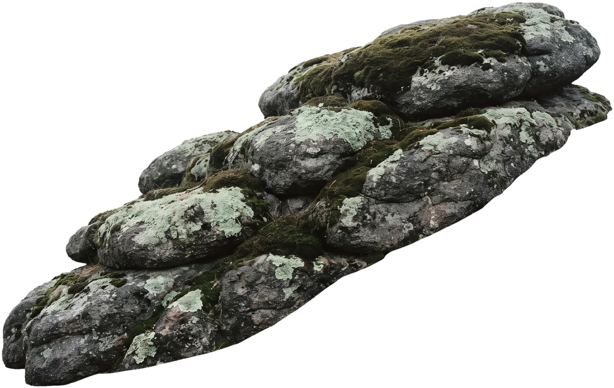
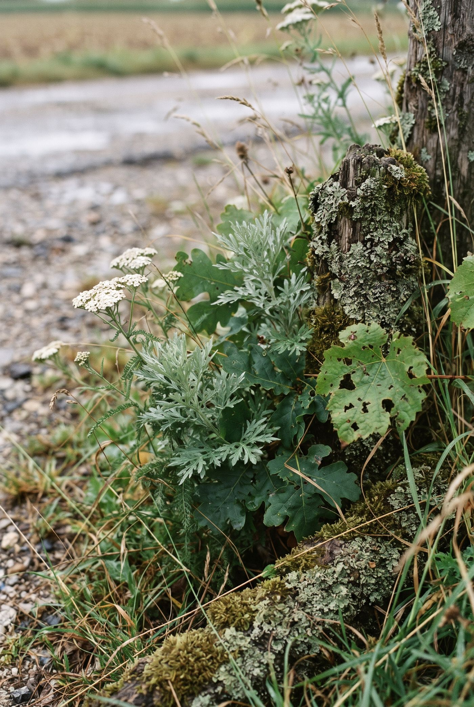

Daniel Amon · Landschaftsplanung · BOKU Wien
Landschaft
planen.Freiräume
gestalten.
Zwischen Plan
und Praxis.

Ich studiere Landschaftsplanung und Landschaftsarchitektur an der BOKU Wien. Dazu kommen über zwanzig Jahre Berufspraxis in Technik, Handwerk, Handel, Büro und Betreuung.
Suche Teilzeitstelle · 8 bis 12 Wochenstunden
Portfolio →Wie ich seheInspiration
„Kunst gibt nicht das Sichtbare wieder, sondern macht sichtbar.“
Ich sehe in einem Graben Schafgarbe und Beifuß, wo andere nur Unkraut sehen. Auf dieser Seite sammle ich, was mir auffällt.
Zur Sammlung →
